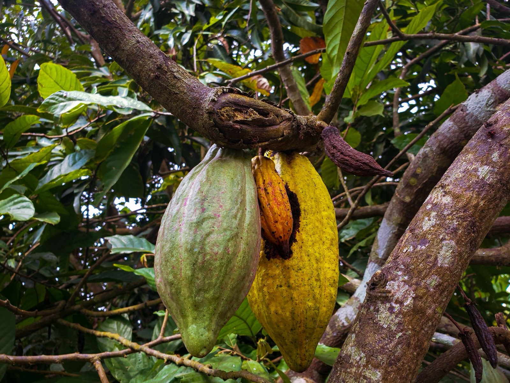
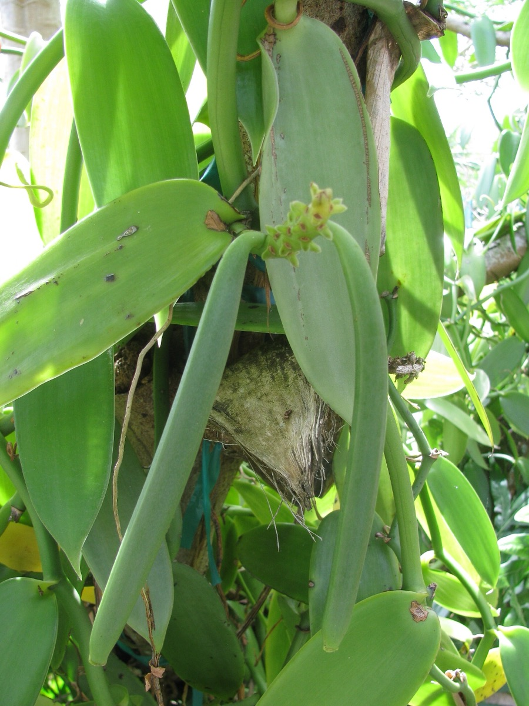

Stage 1: Plantation
Our vanilla vines and cocoa trees grow on our plantation and with partner farmer groups in Indonesia, the only major vanilla origin that harvests and cures all year. Supply never waits on a single season.
Every lot is traceable to the farmer group that grew it, the traceability large buyers now write into their sourcing policy.
What we check
- Farmer-group registration
- Agronomic practice
- Pesticide use records